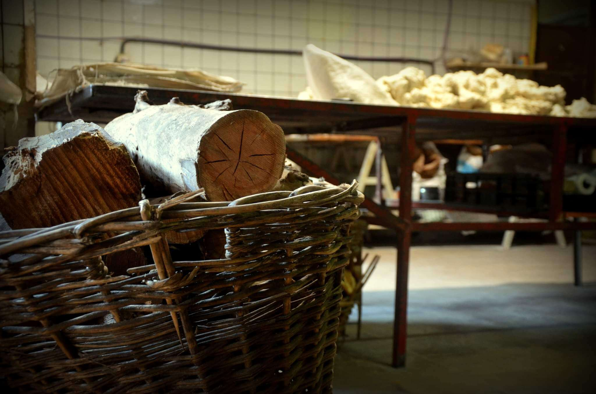

Nuestros productos son elaborados en la antigua Panadería La Nacional. Estan hechos en el horno a leña, el cual desde hace años no se apaga y enfriarlo llevaria toda una semana. Usamos leña de Eucalipto estacionada y
mantenemos nuestra clásica receta que acompaña las mesas marplatenses desde 1959.
Gracias por seguir confiando en nosotros.
